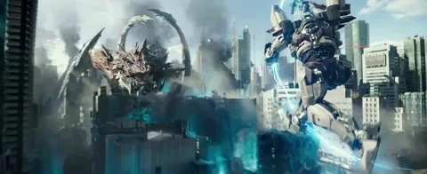

Quan legions de monstruoses criatures anomenades Kaiju surten de les profunditat del mar, s'inicia una guerra que matarà milions de persones i esgotarà els recursos de la humanitat durant anys. Per poder combatre els gegants Kaiju, els humans construeixen uns robots enormes anomenats Jaegers, que són pilotats per 2 humans simultàniament mitjançant un enllaç neuronal. Tot i això, els Jaegers són poc eficients contra els Kaiju. Quan la humanitat està a punt de perdre la batalla definitivament, recorren a dos herois insòlits: un ex-pilot i una aprenent que encara no domina els Jaegers. Els dos personatges s'uneixen per pilotar un Jaeger antiquat i obsolet per guanyar la batalla.
